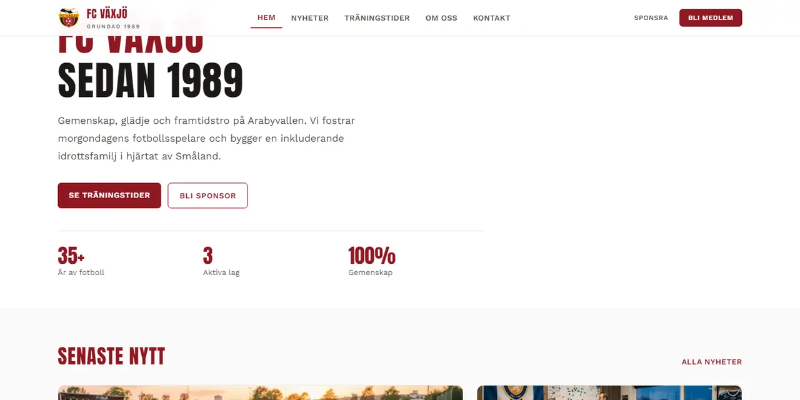
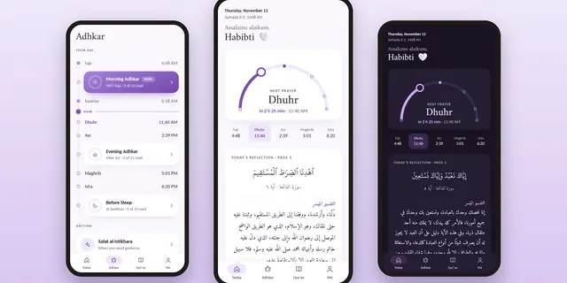

Utvalt2026 · React · Firebase · Kalender
The Andalus Calendar
En kalender där bönetiden redan sitter i vyn, så du inte bokar över salah.
Öppen för jobb · Växjö
Jag söker en fast anställning där jag får växa i ett team.
Utvalt2026 · React · Firebase · Kalender
En kalender där bönetiden redan sitter i vyn, så du inte bokar över salah.

Hej, jag är Marcel. Jag bygger hemsidor, webbappar och egna produkter, bland annat The Andalus Calendar.
Just nu studerar jag Java med cloud på JENSEN yrkeshögskola. Jag vill jobba i ett team där jag får koda, lära mig mer och ta ansvar.
Jag bygger hemsidor åt företag och föreningar, bland annat FC Växjö Reborn i Next.js. Jag jobbar med allt från design och frontend till publicering via GitHub och Hostinger.
Se FC Växjö Reborn
Jag driver egna produkter, till exempel The Andalus Calendar i React och Firebase. Till min fru byggde jag adhkar-appen Sabaah Al-Wuruud för Android.
Se The Andalus Calendar

På JENSEN yrkeshögskola läser jag Java och Spring Boot, bygger REST API:er och jobbar med AWS, Azure och Docker. Jag har byggt en Reddit-klon där man kan lägga inlägg, kommentera och skicka vänförfrågan.
Läs hela CV:t(förutom svenska, engelska, spanska, arabiska och franska…)
Jag är öppen för jobb och söker en fast anställning. Mejla eller ring, så berättar jag mer.